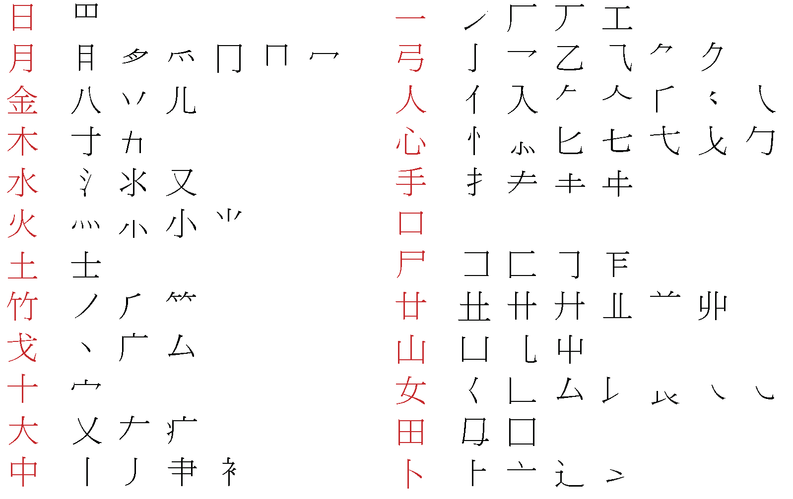
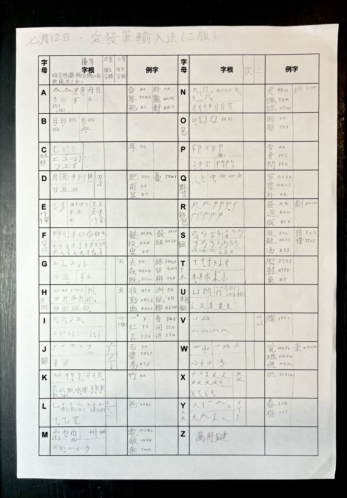

愛發筆輸入法
後記
愛發筆輸入法這個想法是我在 2020 年的夏天萌生的。那時新冠疫情在全球肆虐，最終使我決定休學一年，不回美國，而留在香港實習。當時我實習的公司電腦上只有倉頡和速成輸入法，我無奈之下只能另外安裝搜狗拼音輸入法才能輸入中文。但因為分配給我的工作也不算多，我趁著摸魚的時間，打算要不然學一學倉頡吧。
只是剛打開那個教學的頁面，我就立刻被嚇住了。密密麻麻的字根表，有些形狀之間看上去毫無關聯卻被分到同一個字母，有些形狀看上去如出一轍卻被分到不同字母，看得我頭都大了。而就算學習好了字根，我一看我的鍵盤，上面根本沒印倉頡字母，只有 ABCD，我還要另外死記鍵位。想到這裡，我就果斷放棄了。但轉念一想，其實這不正是倉頡最大的難點嗎？如果我把死記鍵位消除掉，不就讓輸入法簡單很多？那段時間我剛好看到藝術家徐冰的「英文方塊字」作品好像在香港展覽，看著那些用看似是漢字筆劃，實則是英文字母的形狀相互組合的作品，我心生出一個絕妙的想法。

沉浸在對自己聰明絕頂的喜悅之中不到幾個小時，我就被迫認清，在中文輸入法的歷史長河之中，我怎會天真地以為這個想法是前無古人後無來者呢？我立刻就查到了「嘸蝦米輸入法」早在二三十年前就想到了這個方法。雖然有些沮喪，但我決定還是將這個想法發展一下，看看能不能弄出個什麼名堂來。
這裡可以說一下，「愛發筆」這個名字，聰明的朋友應該一看就看出來這是對英文“Alphabet”的音譯，象徵著字根取形於英文字母本身的緊密聯繫。「愛」可以是「愛好」、「喜愛」、「熱愛」，代表我閒暇（摸魚）時的個人愛好，也是我對輸入法乃至漢字文化的熱愛；「發」可以是「發明」、「發展」、運氣好的話或許還能「發財」（無奈的是我想並不會）；而「筆」則是「筆劃」，讓整個名字更符合其輸入法的性質。
愛發筆輸入法的第一個字根表，就在那家公司的一張環保紙上成形了。由於字根的形狀通常是筆劃組合，未必都是 Unicode 裡收錄的偏旁，所以從第一版到我 2021 年夏天返回美國前的第二還是第三版，愛發筆的字根表都是我徒手寫畫的。把字根表定下來後，笨笨的我嘗試過用 text editor 逐字輸入每個字的拆碼，「的」JBA，「是」BFY⋯⋯我原來的目標是 200 個字，但最後沒拆幾十個就又放棄了，因為這個過程實在是太枯燥了。而且我拆了 200 個字，然後呢？一個能讓人順暢打字的輸入法，少說也要收錄三四千字，市面上的老牌輸入法動輒收錄上萬字，龐大的任務讓我失去動力，最終只將幾版的字根表收進抽屜裡，被打進了我個人愛好項目的冷宮裡。

但在冷宮裡的妃子，一日沒有被處死，一日就有出冷宮捲土重來的機會。今年 2026 年夏天，我在一個朋友的催促下，終於學會了用 AI 工具“vibecode”編程。當我發現了 AI 編程的強大後，我忽然想起五年沒見的愛發筆——我終於有工具、有能力將你從冷宮裡接出來了！
在 AI 工具和 Make Me A Hanzi 開源漢字資源的幫助下，我設計了一個取碼的工具，讓我可以點擊漢字裡的筆劃，將一個或多個筆劃組合定為字根，然後 AI 會幫忙將這些字根形狀記錄下來，譜成字根表。有了字根表， AI 還會學著透過比對已有字根的筆劃和未取碼字的筆劃，給出一個拆碼預測，讓我拆碼的過程更加直觀也更加有趣，讓我最終能不放棄為數千個漢字取碼，並透過利用鼠鬚管製作出了真正能夠打字的輸入法。但我需要澄清，愛發筆的設計，包括字根、取碼原則、簡碼等所有的內容，都是我自行設計與完善。AI 的角色主要是建立工具讓我可以直觀地進行設計工作，整合已有資料並提供反饋（譬如重碼率等），還有將我設計的內容編成輸入法。在 AI 和網上資源的幫助下，這個五年前看似不可能的艱鉅任務，最終在一個多月內基本完成。
你說我真的奢求愛發筆能夠撼動倉頡、速成、或是嘸蝦米、大易等前輩在字形輸入法或繁體中文用戶之中的地位嗎？當然不是。但在這個項目的過程之中，我感到無比喜悅，不單是因為我終於有工具有能力將我以前的想法變為現實，更是因為在發展愛發筆的過程中，我對漢字以及漢字輸入法發展的歷史有了更深入的學習。我記憶最深刻的是，我查到了「縱橫輸入法」，然後從「縱橫輸入法」我又查到了最早用字形和數字為漢字編碼的「四角號碼檢字法」。
四角號碼檢字法是民國學者王雲五先生在上世紀初，為了解決部首或筆劃檢字難的問題所發明的檢字法。他將筆劃分成橫、垂、點、交叉、方框等十類，分別配上 0 至 9 十個數字，然後按照每個漢字左上、右上、左下、右下四個角所呈現的筆劃字形，取四碼編號。此法一出，隨即被大量字典或圖書館等有檢索需要的場景使用，成為近代漢字發展的一個重要里程碑，至今影響深遠。我讀著胡適先生為《四角號碼檢字法》寫的序言，當中提到上世紀初適逢時代變化，大量書籍和資料湧現，但漢字檢索難讓查閱資料變得十分費時，阻礙知識傳播，拖慢中國發展。而王雲五先生為了解決這個問題，日思夜想，終於在嘗試不同想法，再不斷調整、改良之後，發明出如此妙計，讓胡適先生深感敬佩，也令我肅然起敬。而半世紀後的朱邦復先生，發明了「倉頡輸入法」這一輸入法的鼻祖後，更毅然放棄專利，讓所有電腦都能免費安裝倉頡輸入法，大大地推動了中文電腦的普及化。
站在這些匠心獨具，卻又無私奉獻的前人的肩膀上，我因有幸跟他們同處於中文和漢字文化的歷史長河中而感到無比自豪，也無比感激。所以就算愛發筆不會成為下一個倉頡，只要它的出現能為我們的中文和漢字文化帶來一丁點的貢獻，為中文使用者帶來一丁點的啟發或方便，那就已經達到我對愛發筆的期望了。
希望你能繼續熱愛中文、熱愛漢字，我的朋友！
二〇二六年八月在美國加州